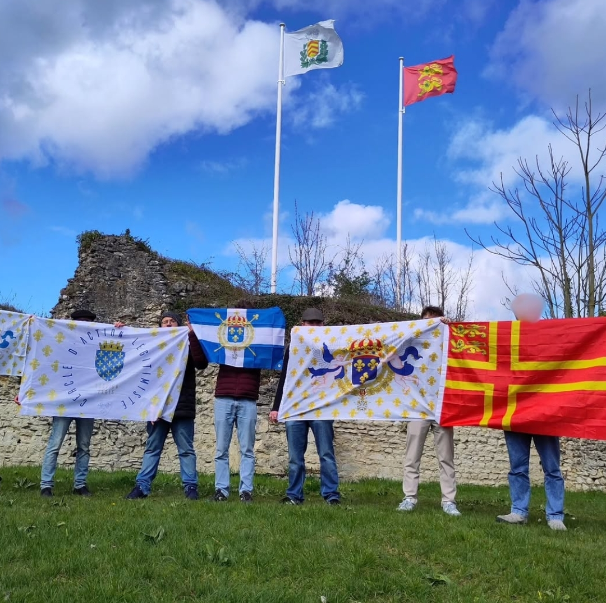
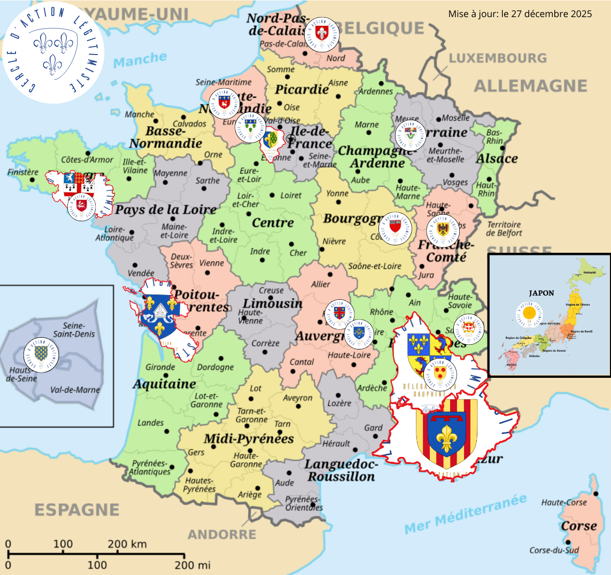
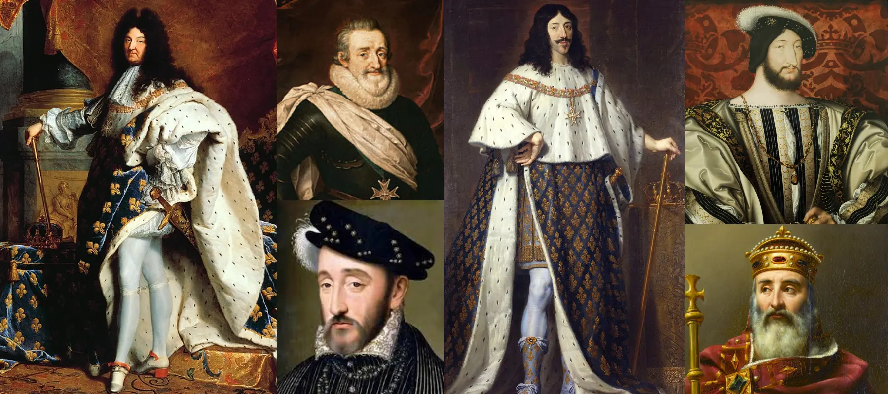
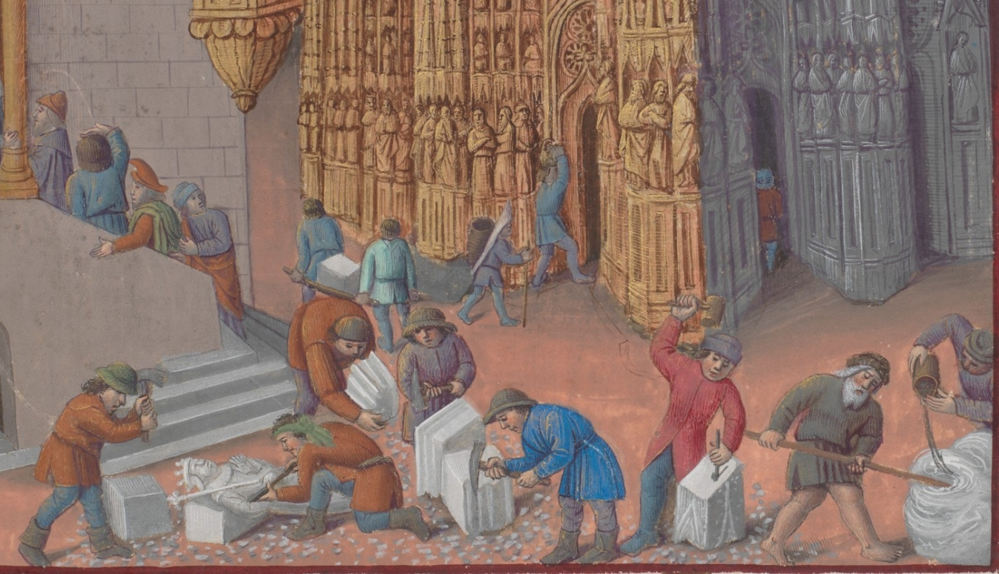
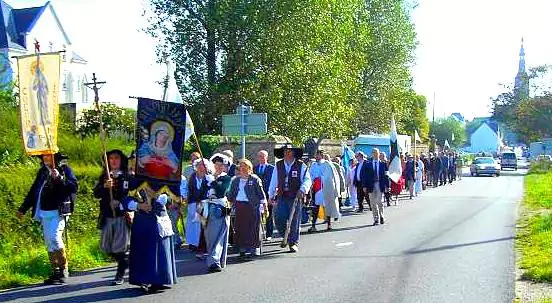
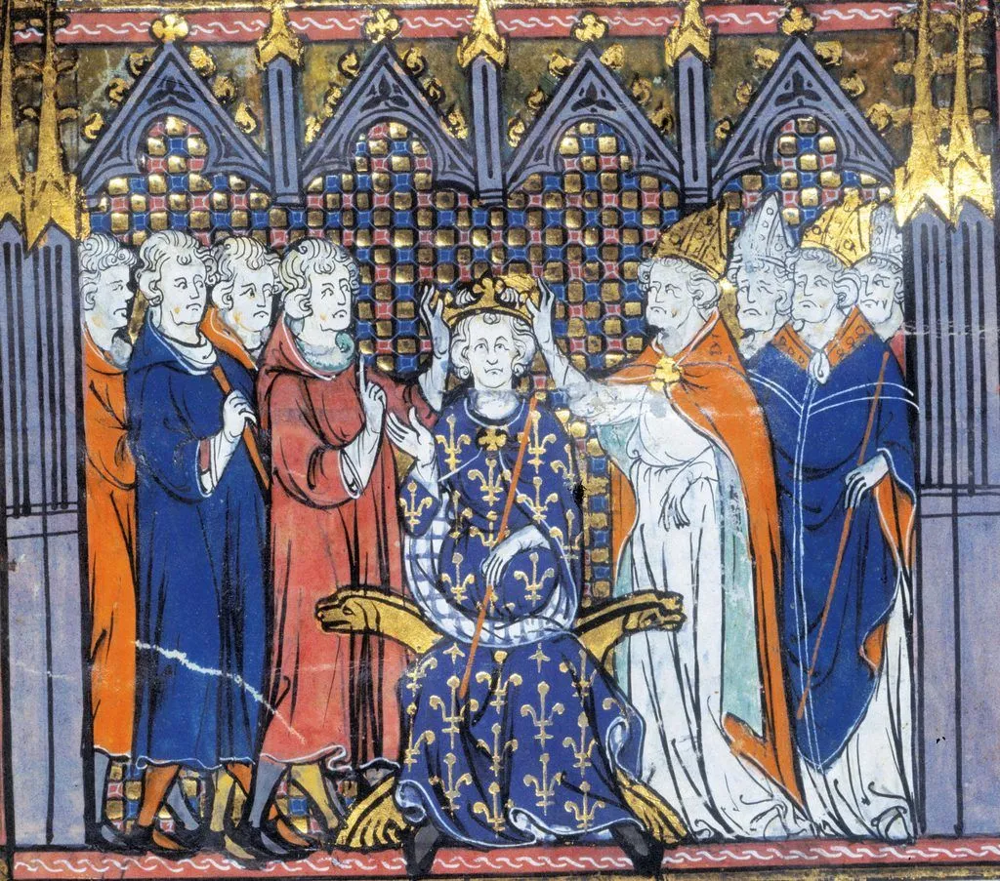

LE MOUVEMENT
Histoire, objectifs, moyens d'action, implantation et fondements doctrinaux
NOTRE HISTOIRE
Le Cercle d'Action Légitimiste a été fondé le 6 février 2018 dans le Bourbonnais, sous le patronage de Saint Mayeul et Saint Odilon. Né du constat que le royalisme devait sortir de la simple nostalgie pour s'engager dans une action concrète, le Cercle s'est implanté petit à petit dans toute la France. Depuis notre création, nous avons organisé plus de 100 conférences, propagé nos idées à de nombreuses reprises sur le terrain, et rassemblé des milliers de sympathisants au légitimisme.
NOTRE BUT
Notre objectif est le rétablissement de la monarchie traditionnelle avec un pouvoir fort et décentralisée, en la personne de Louis XX, duc d'Anjou, chef de la maison de Bourbon. Nous défendons le bien commun, l'enracinement local, la fidélité aux Lois Fondamentales du Royaume, et une conception organique du Royaume respectueuse des personnes et des communautés naturelles. Nous souhaitons retrouver la France catholique, royale et fière de son histoire millénaire.

NOS QUATRE MOYENS D'ACTION
FORMATION
Conférences, cercles de lecture, journées de formation, chaine youtube et journal digital.
TERRAIN
Affichages, tractages, actions banderoles, opération drapeau blanc, participation à des rassemblements.
COHÉSION
Randonnées, soirées de camaraderie, repas conviviaux, entrainements sportifs, visites, débats.
SPIRITUALITÉ
Pèlerinages, messes, cérémonies, chapelets, maraudes, participation à des processions catholiques.
NOS ANTENNES
Le Cercle d’action légitimiste s’organise en structures adaptées aux réalités du terrain : en milieu urbain, des sections locales rassemblent les jeunes de 18 à 30 ans à l’échelle des agglomérations ; dans les territoires moins densément peuplés, des délégations permettent aux membres de cette même tranche d’âge de s’engager sur un périmètre plus étendu ; enfin, des délégations d’étude, organisées à l’échelle provinciale, accueillent des membres plus expérimentés désireux de contribuer par la réflexion et la transmission.
Comment agir dans une antenne ? Contactez-nous via notre compte Instagram en précisant votre ville. Nous vous mettrons en relation avec l'antenne locale. Aucune antenne proche de chez vous ? Procédez à l'adhésion puis contactez-nous en message privé sur notre compte Instagram.
Nous sommes présents avec des antennes militantes à Lille, Amiens, Rouen, Vernon, Nancy, Paris, Vannes, Dijon, Besançon, Clermont-Ferrand, Saint-Étienne, Chambéry et Grenoble, ainsi que dans le Morbihan, la Saintonge et la Provence. Nos délégations études couvrent le Valois, le Mantois, le Dauphiné, le Languedoc Oriental et le Japon.

LES FONDEMENTS DOCTRINAUX
SOUVERAINETÉ DU ROI PAR LA GRÂCE DE DIEU
Le roi exerce la souveraineté non par délégation du peuple, mais par la grâce de Dieu. Il incarne l'unité du pays et la continuité de l'État.

LOI SALIQUE ET SUCCESSION HÉRÉDITAIRE
La couronne se transmet de mâle en mâle par ordre de primogéniture. C'est la première loi des Lois Fondamentales du Royaume.
CATHOLICISME COMME RELIGION D'ÉTAT
La France est la fille aînée de l'Église. Nous sommes pour restaurer le catholicisme comme religion d'État parce que la politique doit servir l'Église.
REJET DE LA RÉVOLUTION ET DE SES PRINCIPES
Nous combattons la République et la Déclaration des droits de l'homme sans Dieu. L'idéologie révolutionnaire provoque toujours décadence et instabilité.

CONTRE-RÉVOLUTION : RESTAURER L'ORDRE NATUREL
Reconstruire l'ordre social chrétien : corps intermédiaires, enseignement catholique, décentralisation, corporatisme et défense de la propriété privée.

DÉFENSE DE LA FAMILLE ET DE LA VIE
La famille traditionnelle constitue la première forme d'organisation sociale,défense de la vie de la conception à la mort naturelle, dignité de la vie humaine.
AMOUR DU PAYS ET DE NOTRE HÉRITAGE
La patrie est un héritage charnel, culturel, spirituel et territorial. Nous nous opposons à l'immigration massive et à l'islamisation de la France.

POUVOIR ROYAL FORT ET DÉCENTRALISÉ
Le roi détient un pouvoir solide pour garantir l'application des lois divine, naturelle et fondamentales, en respectant le principe de subsidiarité sur les corps intermédiaires.
ESPÉRANCE DU RETOUR DU ROI
Notre engagement prépare la transition. Louis XX est prêt à assumer sa charge de Roi. Chaque nouvelle adhésion nous rapproche de la Troisième Restauration.